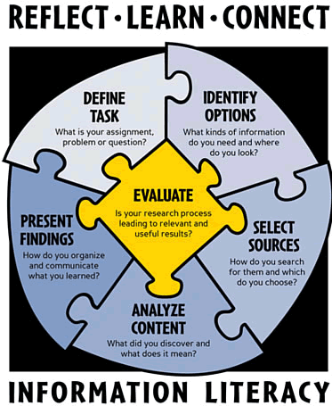

English 102

To follow along, load this in your browser: https://www.ryanpatrickrandall.com/talks/engl102.html
Created by Ryan P. Randall
Hello!
I'm Ryan Randall, from the Library!
I'm here to help you prepare for your next assignment. And the rest of your classes, to be honest.
We'll talk about the inquiry process and advanced searching.
What have you already done in the library?
- Printing?
- Used the textbooks on reserve?
- Used one of our many computers?
- Requested an article or book?
- Used the online chat?
- Used the anatomical models?
Here's some more library resources!
- Databases—including movies!
- Research Guides that help you know where to start!
- Schedule an Appointment with a Librarian—you've already paid for it!
- Book a Group Study Space—we've got four of them!
Any questions so far?

The Inquiry Process
"Research" is not finding a hidden cave full of facts.
So what is it?
For one, it's a process!
Let's take three minutes to talk about how you currently research things. What do you do? How do you start? How do you end?
So, what do you do?
Where do you tend to look?
How do you decide if it's good to use?
When do you know it's time to stop?
Wait: how did you even know what question you were asking?
Research Process
It might surprise you, but expert writers go through that middle circle repeatedly.
Inquiry Process (An Expanded Research Process)
Ask yourself questions in each part to help you move along!

The Seattle Community Colleges's research process puzzle shows evaluation as central.
Abstraction ⇒ Action
aka "I'm happy for you & I'm gonna let you finish
but I need to get this paper done"
Another Version of the Inquiry Process
- Essential Question: What do you want to know?
- Proposal & Plan: How & where will you search?
- Explore & Research: How does what you find change your approach? How can experts help?
- Put It All Together: Make an appointment with CWI's Writing Center!
- Share It All: Turn in what you've made!
The Library can help most with the first three parts.
Here's some great places to start!
- Credo Reference—it's a jumping-off point to many library sources
- Academic Search Complete—our "supercenter" database
- CQ Researcher—lots of jumping-off points and timelines
- Gale Virtual Reference Library—it's like Wikipedia, but better
Article Searching +

Keywords and Advanced Search are Your Friends
Let's work on developing the keywords for your search.
Search Term Brainstorming
| Topic | Broader | Narrower | Synonym | Related | |
|---|---|---|---|---|---|
| examples: | car | vehicle | Honda | automobile | truck |
Book Searching +
Let's try searching for books related to our topic.
How did this go? Let me know at https://bit.ly/cwilif!
Keep in touch with the CWI Library
Please schedule an appointment with a CWI Librarian if you'd like further research assistance.
You can also get help from the College of Western Idaho Libraries through our online chat, our FAQ pages, calling or texting us, and email!
Thank you for your time!
"Pulling a book off the shelf" photo by Bennington College's Crossett Library with a CC BY-NC-SA 2.0 license.
Blakeslee, S. (2004). The CRAAP test. LOEX Quarterly, 31(3), 6-7. Retrieved from https://commons.emich.edu/loexquarterly/vol31/iss3/4.
"Purpose" photo by Seth Sawyers with a CC BY 2.0 license and given some minimal filtering by Ryan.